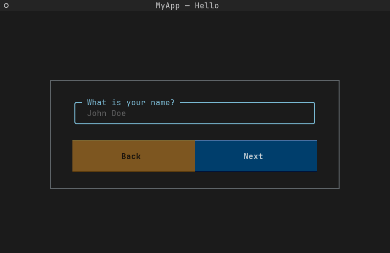

The Wizard class
This wizard class is your main interface with the library. In other words, you must use it to interact with TW (TextualWizard) in order to create, run, and retrieve user input from your wizard.
The usage is very straightforward, considering that you can create and run your wizard in just two steps.
- First, you create your wizard, and supply basic information.
my_wizard = Wizard(
questions=[Text(...), Integer(...), Number(...), Select(...)],
title="MyAwesomeApplication",
sub_title="Account creation"
)
- Then, just run it!

Wizard(
questions: Sequence[InputType],
title: str = "Wizard",
sub_title: Optional[str] = None,
*,
disable_tui: bool = False
)
Use this class to interface with the library. It allows you to create your wizard and to run it.
| PARAMETER | DESCRIPTION |
|---|---|
questions |
A list of inputs to show to the user at each step of the wizard.
TYPE:
|
title |
The name of your wizard. Should be something like the name of your application, it will be displayed to the user.
TYPE:
|
sub_title |
A more specific title, for example describing the goal of the wizard.
TYPE:
|
disable_tui |
Disable the Textual User Interface and use Inquirer instead.
TYPE:
|